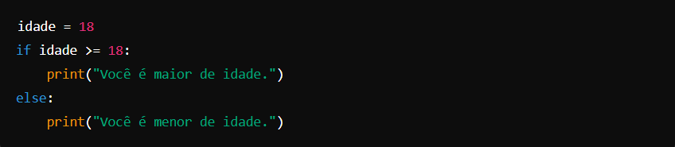
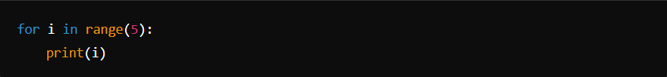
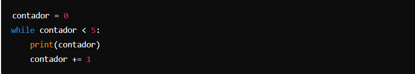
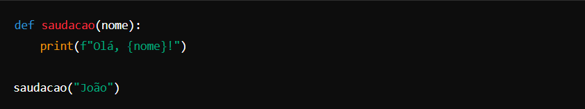
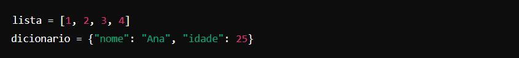
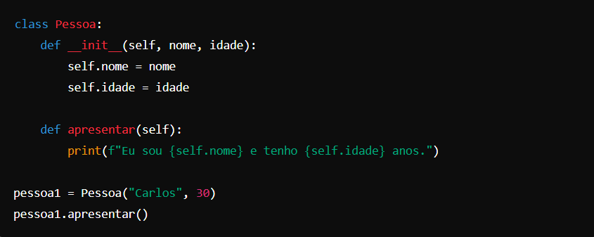
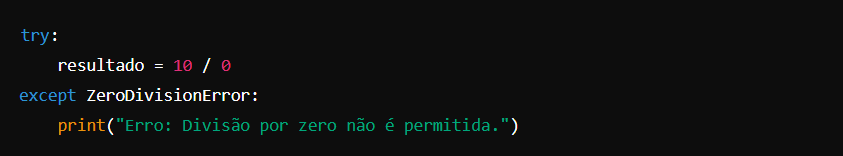

Python -
Python é uma linguagem de programação de alto nível amplamente usada por sua simplicidade e versatilidade. Criada por Guido van Rossum e lançada pela primeira vez em 1991, Python se destaca por sua sintaxe clara e legível, que facilita o aprendizado e a escrita de código. Essa linguagem é multiparadigma, suportando programação orientada a objetos, funcional e estruturada, o que a torna adequada para uma ampla gama de aplicações, desde desenvolvimento web e automação até ciência de dados, inteligência artificial e desenvolvimento de software. Uma das características mais atraentes do Python é sua vasta biblioteca padrão, que oferece módulos e pacotes para realizar tarefas comuns sem a necessidade de escrever código do zero. Além disso, a comunidade ativa e global de desenvolvedores contribui com uma infinidade de bibliotecas e frameworks de código aberto, expandindo ainda mais suas capacidades. Seja você um iniciante no mundo da programação ou um desenvolvedor experiente, Python oferece uma plataforma robusta para transformar ideias em realidade de forma eficiente e eficaz.
A lógica de programação em Python segue os mesmos princípios fundamentais que qualquer outra linguagem de programação, mas com uma sintaxe e estrutura que facilitam o desenvolvimento e a compreensão do código. Aqui estão alguns conceitos-chave que exemplificam a lógica de programação em Python:
1. Sequência: As instruções em um programa Python são executadas em uma ordem específica, uma após a outra, a menos que seja especificado de outra forma. Essa sequência é a base de qualquer lógica de programação.
2. Estruturas Condicionais: Python usa if, elif (else if) e else para tomar decisões com base em condições. Isso permite que o programa execute diferentes blocos de código com base no valor de expressões booleanas.

3. Laços de Repetição: Python permite repetir blocos de código com estruturas de laço como for e while.
. for é usado para iterar sobre uma sequência (como uma lista ou string).

. while continua a executar um bloco de código enquanto uma condição for verdadeira.

4. Funções: Funções são blocos de código reutilizáveis que executam uma tarefa específica. Em Python, funções são definidas com a palavra-chave def.

5. Manipulação de Dados: Python oferece estruturas de dados como listas, dicionários, conjuntos e tuplas para armazenar e manipular dados de forma eficiente.

6. Programação Orientada a Objetos: Python suporta POO, permitindo criar classes e objetos para modelar dados e comportamentos complexos.

7. Manipulação de Exceções: Python usa try, except para tratar erros que possam ocorrer durante a execução do programa, permitindo uma execução mais robusta.

Esses elementos formam a base da lógica de programação em Python, permitindo criar programas que variam de simples scripts a aplicações complexas.